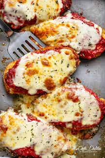

Chicken Parmesan

Crispy, juicy, cheesy chicken parmesan
Chicken Parmesan (also called Chicken Parmigiana) is one of the most loved, most popular AND most ordered chicken recipes in the world. With this recipe you are sure to have people asking about how to make it.
Breading ingredients
- Panko
- Breadcrumbs
- Parmesan cheese
- Garlic powder
Ingredients for chicken
- 2 large eggs
- 1 tablespoon minced garlic
- 2 tablepoons fresh chopped parsley
- Salt and pepper to season
- 3 large chicken breasts halved horizontally to make 6 fillets
- 1 cup Panko breadcrumbs
- 1/2 cup breadcrumbs
1/2 cup fresh grated parmesan chees
- 1 teaspooncgarlic powder
- 1/2 cup olive oil for frying
Ingredients for sauce
- 1 tablespoon olive oil
- 1 large onion chopped
- 2 teaspoons minced garlic
- 14 ounces tomato purree
- Salt and pepper to taste
- 1 teaspoon dried Italian herbs
- 1 teaspoon sugar (optional)
Ingredients for topping
- 8 ounces mozzarella cheese sliced or shredded
- 1/3 cup fresh shredded parmesan cheese
- 2 tablespoons fresh chopped basil or parsley
Cooking instructions for chicken
- Preheat oven 430°F | 220°C. Lightly grease an oven tray (or baking dish) with non stick cooking oil spray; set aside.
- Whisk together eggs, garlic, parsley, salt and pepper in a shallow dish. Add chicken into the egg, rotating to evenly coat each fillet in the mixture. Cover with plastic wrap and allow to marinate for at least 15 minutes (or overnight night if time allows for a deeper flavour).
- When chicken is ready for cooking, mix bread crumbs, Parmesan cheese and garlic powder together in a separate shallow bowl. Dip chicken into the breadcrumb mixture to evenly coat.
- Heat oil in a large skillet over medium-high heat until hot and shimmering. Fry chicken until golden and crispy, (about 4-5 minutes each side).
- Place chicken on prepared baking tray / dish and top each breast with about 1/3 cup of sauce (sauce recipe below). Top each chicken breast with 2-3 slices of mozzarella cheese and about 2 tablespoons parmesan cheese. Sprinkle with basil or parsley.
- Bake for 15-20 minutes, or until cheese is bubbling and melted, and the chicken is completely cooked through.
Cooking instructions for sauce
- Heat oil in a medium-sized pot. Fry onion until transparent (about 3 minutes), then add the garlic until fragrant (about 30 seconds).
- Add the tomato puree, salt and pepper to taste, Italian herbs and sugar (If using). Cover with lid to simmer for about 8 minutes, or until sauce has thickened slightly. Taste test and adjust salt and pepper, if needed.
Main page